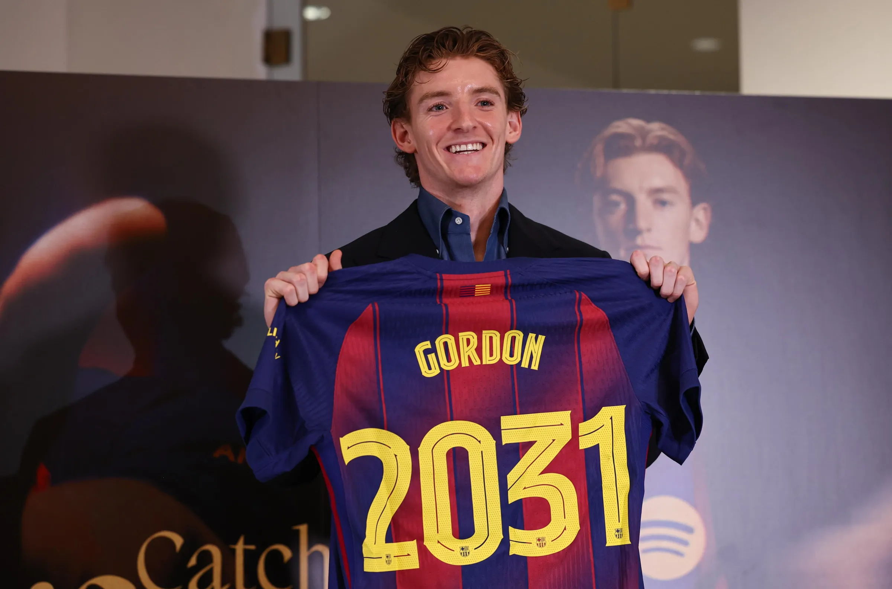

Official Transfer
Anthony Gordon Signs with Barça
La Blaugrana have officially completed the massive signing of Anthony Gordon from Newcastle United. The English winger is already training under Hansi Flick.